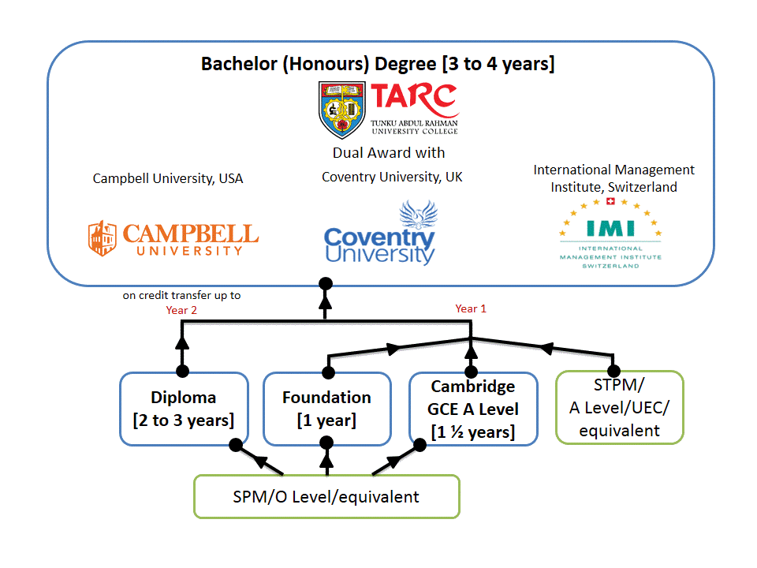

General Academic Progression

Programmes Offered
-
Begin your education journey by browsing TAR’s range of programmes.
| Accounting | Banking & Finance |
|---|---|
| This programme provides students with broad base knowledge in financial accounting & reporting, management accounting, finance, economics, management, taxation, auditing, law and information technology & systems. It provides a wide spectrum of knowledge and skills necessary for a career in accountancy and finance at the semi-professional level as well as for graduates of this Diploma to further their education and training to be qualified professional accountants.The Diploma in Accounting has been accredited by professional bodies such as ACCA and CIMA. | The curriculum of this programme focuses on the operation and management of banking institutions and the regulations governing the banking industry in Malaysia. |
| Broadcast Communication | Building |
| This programme entails knowledge and skills for the technical understanding, writing, scripting, presenting and organising of traditional and new broadcast media. There are also specific courses designed to enhance the depth of knowledge and appreciation of the broadcast communication industry. | This programme is a multi-discipline programme designed to provide a fundamental academic base in the discipline of construction management and property development needed in the construction industry. This programme focuses on planning, co-ordination and control of the construction project from inception till completion stage; managing financial issues of the project; managing the production ofdesign, tender, contract and construction drawing including tender and contract documents; managing the selection of appropriate procurement system, contractual arrangement and tendering method which satisfies the client’s needs in term of time, cost, quality and legal aspects; and managing the contractual issues based on general contract principles of Building Contract as well as general legal principles of Contract Law, Sale of Goods Act and Law of Tort. This programme will provide effective pathway for students to further their studies at degree level in the area of construction management. |
| Business Administration | Business Information Systems |
| This programme is designed for students to acquire the basic understanding of business administration and to develop the requisiteadministrative skills required in the job market. It provides opportunities to school leavers who wish to obtain a business administration qualification to embark on a business-related career. It also enables them to proceed to higher level of studies. | This programme majors in business information systems. It aims to produce graduates with fundamental knowledge in information technology and its business related applications. It covers the theoretical and practical aspects of developing information systems, management, costing, accounting, electronic commerce, and mathematics. This programme is supported by case studies and computer laboratory assignments. In addition, students are exposed to part of the SAP curriculum like logistics and enterprise resource planning. Students will acquire practical skills in the C Language, HTML5, JavaScript, VB.NET, Microsoft Expression Web, Oracle Database, accounting software packages and be guided through the process of developing an information system. |
| Computer Science & Computer Mathematics | Computer Science & Management Mathematics |
| Students are trained in both theoretical knowledge and practical skills for software development, system design and related mathematical techniques. | Emphasis is on analysis, development and implementation of computer systems, as well as mathematical techniques for financial and managerial applications. |
| E-Commerce & Marketing | Electronic Engineering |
| This programme is designed to provide students with the fundamental knowledge of e-commerce and marketing, and the skills of applying e-commerce technologies to marketing. | Electronic technologies form the foundation of modern society, making possible the devices and systems that we rely upon in our daily life such as mobile communications, computer networks, medical equipment, video and audio systems and industrial control and automation. Electronics is a broad engineering field, giving students enormous flexibility and wide-ranging career options. The Diploma of Electronic Engineering will focus on applying basic concepts and skills to real-world situations and developing broad-based knowledge with a curriculum that includes electronic devices, communications, automation and control, software engineering and embedded systems. |
| Finance & Investment | Human Resource Management |
| This programme focuses on the operations and management of financial institutions and intermediaries in particular their response to global business trends and contemporary issues that impact the financial services industry. | The programme is designed to provide students with the fundamental knowledge and skills in human resource management. |
| Information Systems Engineering | International Business |
| This programme provides students with a basic understanding of computing techniques and aims to develop the computing and information technology-based knowledge and skills required in modern industrial, commercial and service organisations. It will equip students with essential knowledge of the underlying principles of modern computing technology and enable students to appreciate how modern computers are applied to a range of real world problems. Students will learn C, Java, Assembly Language, Oracle Database, HTML5, CSS, Microsoft Expression Web and JavaScript. Upon completion, graduates will have acquired knowledge and developed skills in the areas of computer programming, systems analysis, operating systems, computer networking, computer applications and object-oriented software development, as well as in generic business courses. | This programme is designed to equip students with the necessary skills and knowledge for a career in administration and management in organizations with cross border transactions. Students are prepared to seek employment in both national and international organisations across different industries at the sub-professional level. |
| Internet Technology | Marketing |
| This programme aims to equip students with Internet-related knowledge and skills. Students are trained in the areas of computer, Internet and World Wide Web technology. This programme also provides a strong element of Internet design and programming in order for the students to obtain the essential skills required for effective commercial use of networks. Students in this programme will learn ASP.NET, JavaScript, CSS, HTML5, PHP, C, Web Programming using Adobe Dreamweaver, web-based multimedia applications using Adobe Animate CC, database using Oracle Database and other supporting courses. | The programme is designed to provide students with the fundamental knowledge and skills in sales and marketing |
| Public Relations | Quantity Surveying |
| This programme develops students’ knowledge and practical expertise in formulating PR plans and organising publicity events, producing PR write-ups and promotional material. To produce capable PR and media relations practitioners, the programme entails courses in PR strategies and tools, PR writing, media relations, media and advertising, public opinion and public speaking. Students’ experiential skills are enhanced via case studies, events and internship. | This programme equips students with fundamental knowledge and skills in quantity surveying practices such as preparing project feasibility study, handling financial issues of the project;preparing tender and contract documents including measurement of construction works and pricing; evaluation and selection of appropriate procurement system, contractual arrangement and tendering method which satisfies the client’s needs in term of time, cost, quality and legal aspects; and advising the contractual issues based on general contract principles of Building Contract as well as general legal principles of Contract Law, Sale of Goods Act and Law of Tort. This programme will provide an effective pathway for students to further their studies in Bachelor of Quantity Surveying (Honours) which enable them to be registered as quantity surveyors. |